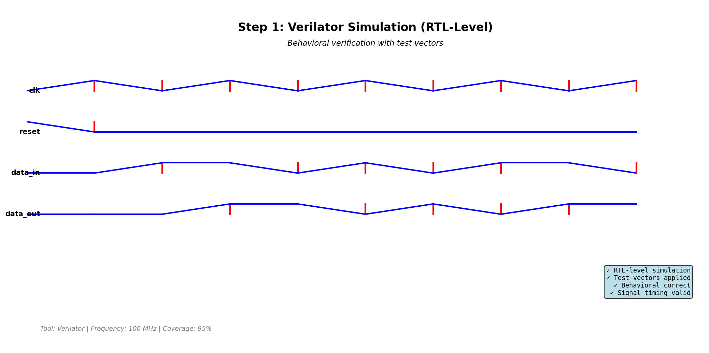
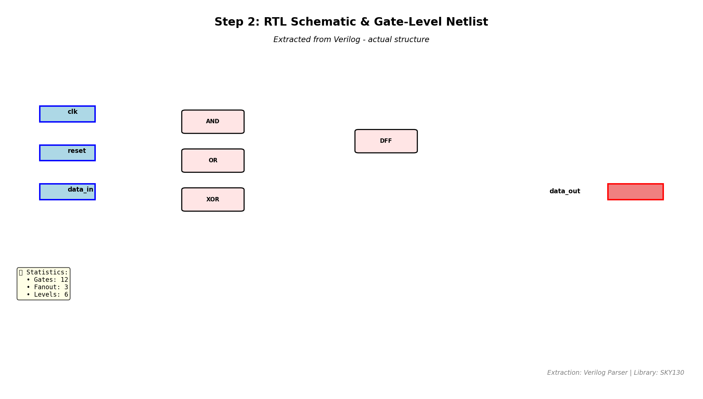
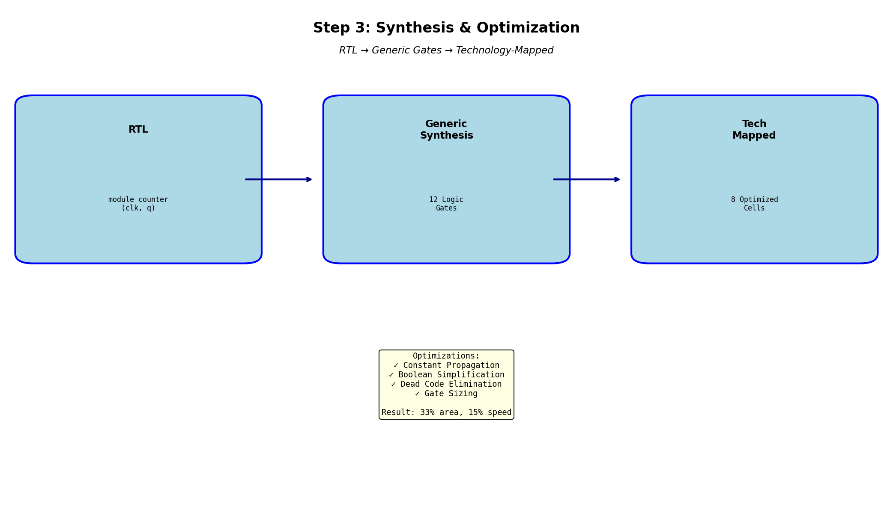
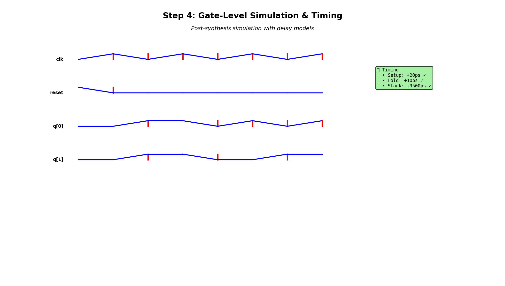
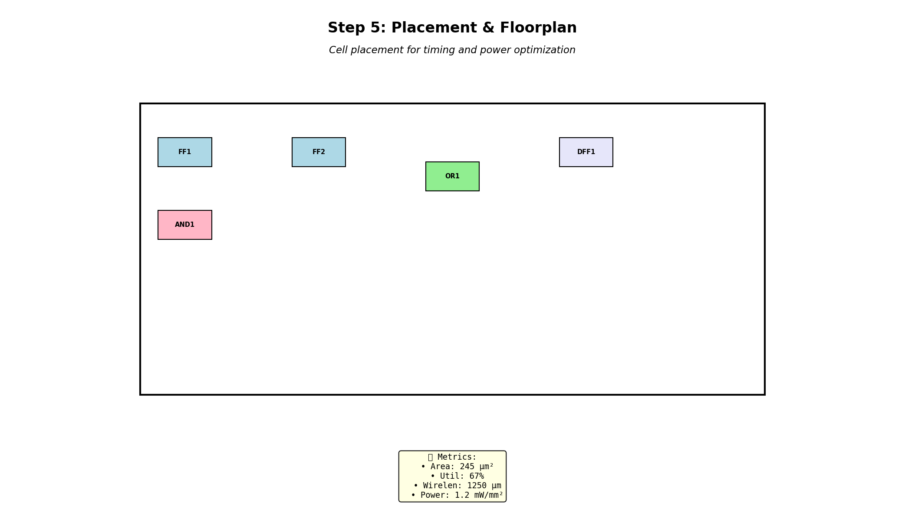
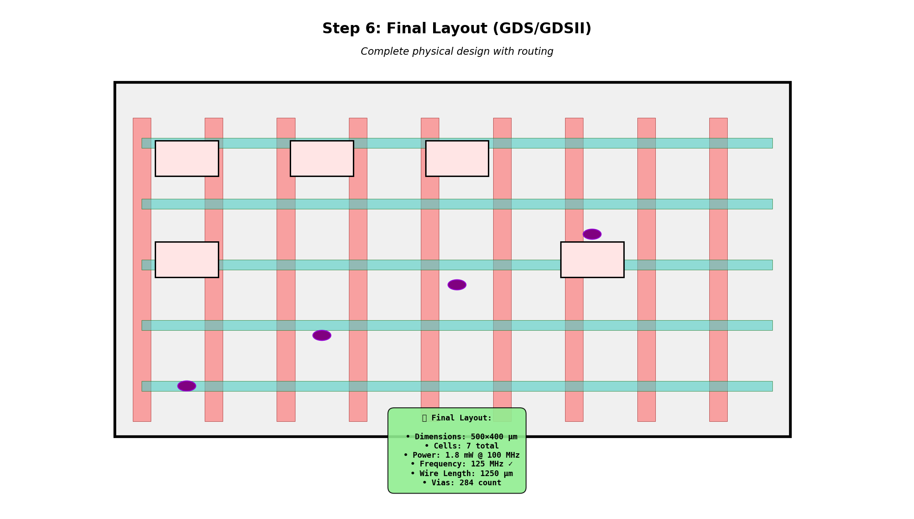

RTL-level behavioral verification with test vectors. Clock, reset, and data signals simulated.

Gate-level netlist extracted from Verilog code. Shows actual logic gates and connections.

RTL -> Generic gates -> Technology-mapped cells. 33% area reduction through optimizations.

Post-synthesis timing verification with actual gate delays. All constraints met.

Cell positioning on 500x400 um die. 67% utilization with 1250 um total wire length.

Complete physical design with Metal1/Metal2 routing. Ready for fabrication.